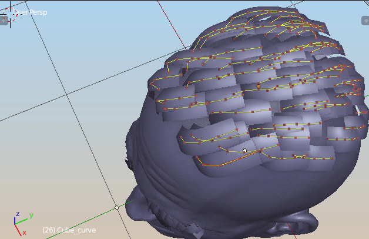
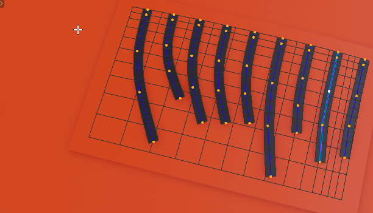
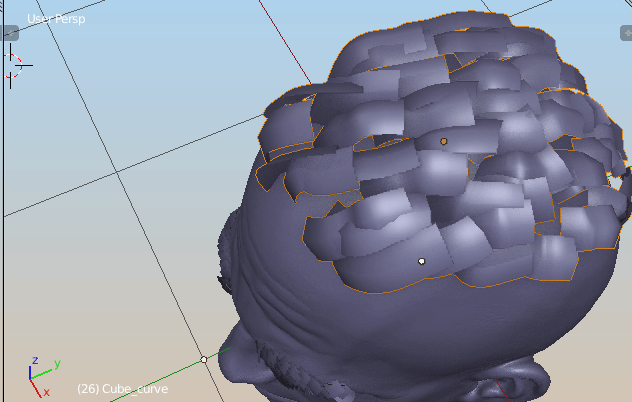
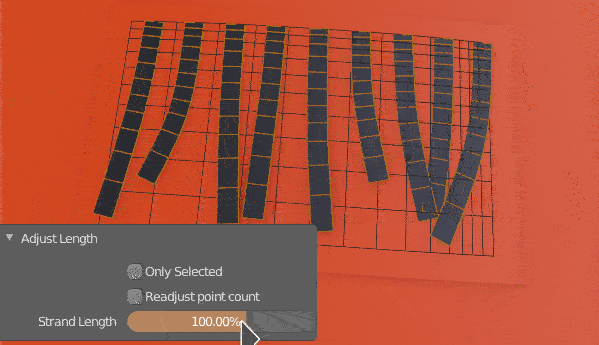
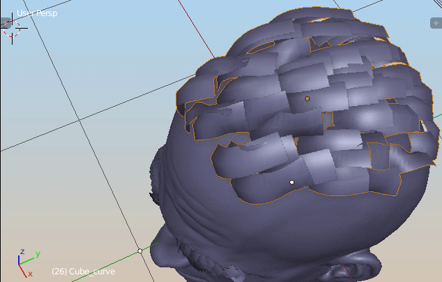
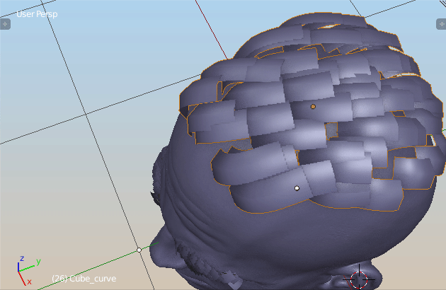
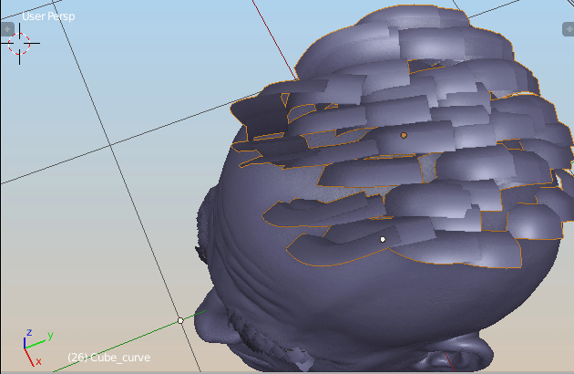

Ribbon operations:¶
Curve Simplify¶
 Curve Simplify- Allows to reduce point count. Good for reducing polycount on hairs
Resample Curve¶
 Resample Curve. Allows to increase/decrease number of points each curve is made of
Parameters (F9):
- Points per strand - How many points each spline will have after resampling
- Offset to tip - Move spline points more toward tip
- Offset to root - Move spline points more toward root
- Equal point count - When disabled, shorter splines will have less points
- Uniform Spacing - Equalize distance between points when resampling
Smooth Curve¶
 Smooth Curve - smooth strand points (eg. to reduce noise)
Adjust Length¶

Straighten Curve¶
Straighten Curve - Straighten strands. You can control influence of straighten over strand length, with: transition offset and contrast parameters
Smooth Tilt¶
 Smooth Tilt does what is says
Taper Curve¶

Taper Curve - change strands radius over length
Radius from length¶
Radius from length - change strands radius depending on its length. You can control min and max radius; transition: threshold and smoothness
Align Curve tilt¶
 Align Curve tilt - lets you align cure tilt to target object surface.
Randomize Curve Tilt¶
Randomize Curve Tilt - change curve tilt over its length
Select Tips/Roots¶
Select Tips/Roots - lets you select first/last points on curves. You have option to randomize selection, or limit it by strand length.
Slice Using Mesh¶
Slice Using Mesh - you can cut curves using mesh. Option is located at the very bottom of HTool pie menu